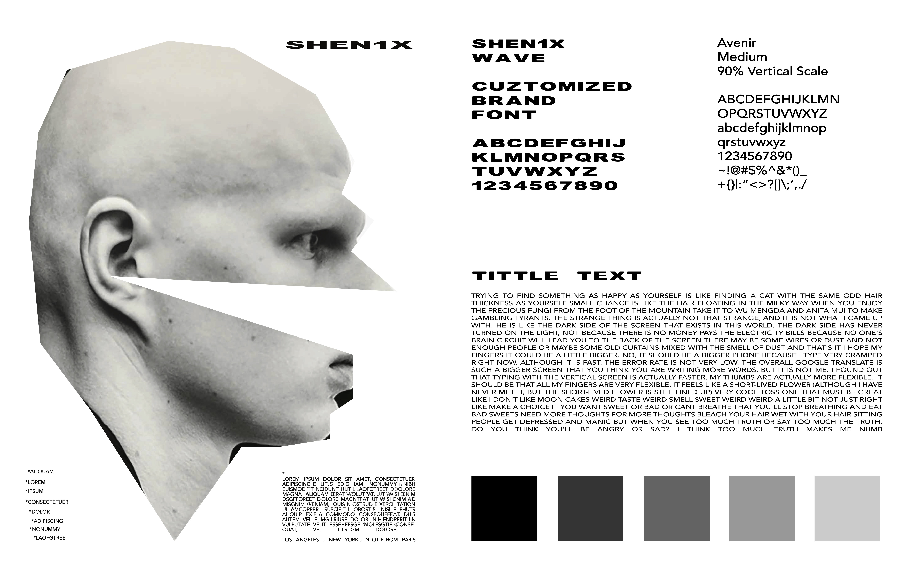
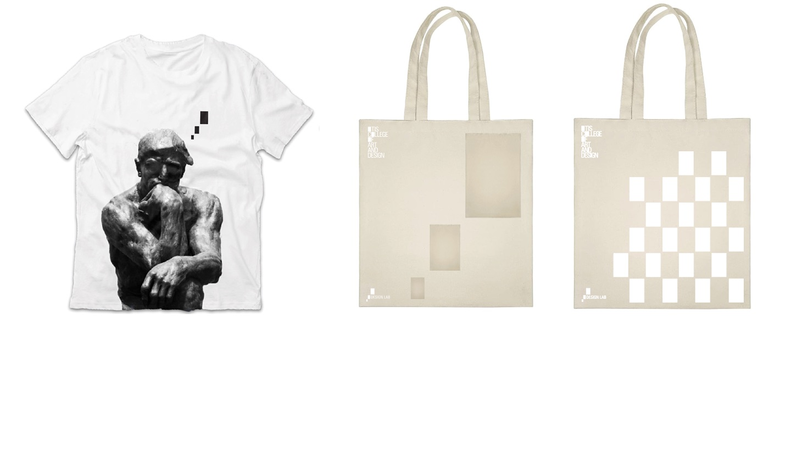

Vie Mobile Blogging
Branding & UI/UX
Client: Vie App
Delivery: Aug 2024
“Vie” is designed to provide a
user-friendly interface and visual system that allows users to create and customize blogs effortlessly. Users can integrate
multiple media formats, such as text,
images, and videos, into their posts and define how their blogs behave on mobile devices. The software ensures easy
navigation, enabling users to enjoy the blogging process without stress while
offering a comfortable environment to store and browse their posts.
This mobile blogging software empowers users to easily create and customize blogs directly from their smartphones. It supports multiple media formats, allowing users to integrate text, images, videos, and more into their posts. Additionally, users can define how their blogs behave on mobile devices, ensuring an optimized and personalized experience for their audience. This case study explores the design process and key features that make mobile blogging both flexible and user-friendly.
*concept:
The concept I designed revolves around creating a seamless and intuitive blogging experience on mobile devices. It focuses on providing users with the flexibility to customize their blogs with various media formats while ensuring easy navigation and a stress-free interface.


